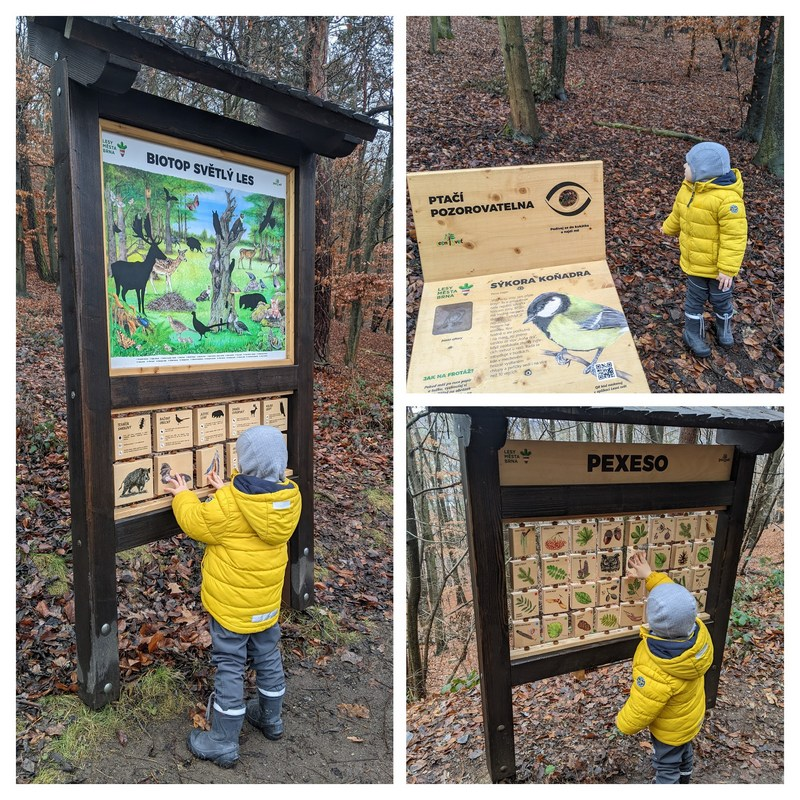
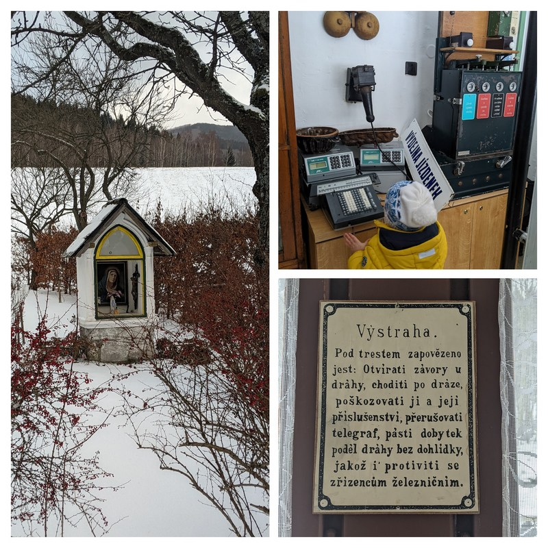
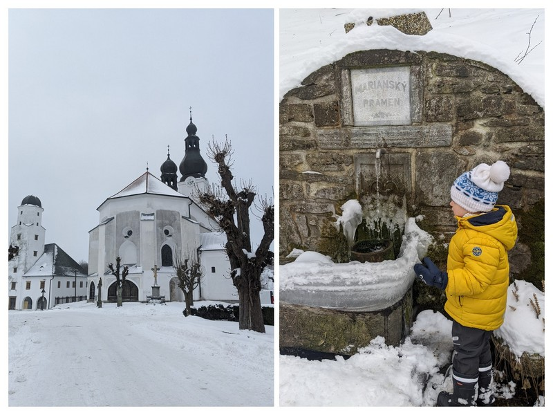

Prošlejší příspěvek tu snad ani nemůže být. Rok se s rokem sešel a já se teprve teď dostala ke vzpomínkám na naši (před)loňskou zimu. A vy víte, že zimu zrovna nemiluju. I ta minulá ale přinesla spoustu příležitostí k výletování a s nimi i řadu hezkých zážitků.
Naučná stezka na Kuřimské hoře
Tento výlet mám ještě v živých barvách. Byl to náš předloňský Silvestr, léčili jsme se z covidu, ale už nám bylo natolik dobře, abychom vyrazili někam do přírody. A tuto naučnou stezku v Kuřimi jsem měla v hledáčku už tak dlouho! Na svačinu vánoční cukroví do krabičky (chuť se mi, na rozdíl od čichu, vrátila docela brzy :-D) a hurá do lesa! Kuřimská naučná stezka patří určitě mezi ty zajímavější v brněnském okolí. Unikátní nám přišly zejména ptačí pozorovatelny, kde jsme kukátkem hledali v lese různé druhy ptáčků a za pomoci mobilní aplikace jsme si mohli i pustit zvuk, který vydávají. Stezka je poměrně dlouhá, ale velmi zábavně udělaná a na jejím konci jsme ještě našli důmyslně ukrytou kešku :-)

Slezským Semmeringem do Horní Lipové
Zbytek mých výletních tipů už se vztahuje k naší zimní dovolené na Ramzové, kam jsme opět vyráželi s partou z Ratíškovic. Stejně jako před dvěma lety v Orličkách, i tento pobyt na Ramzové jsme si s Olim náramně užili. O to víc, že naše ubikace byla jen coby kamenem od sjezdovky a (hlavně!) železniční stanice. Z okna našeho pokoje jsme tak mohli pozorovat každého Brejlovce, který projel okolo :-D Když jsme se doslechli, že zdejší železniční trati se přezdívá Slezský Semmering a v nedaleké stanici Horní Lipová mají malé železniční muzeum, rozhodli jsme se, že to si rozhodně nemůžeme nechat ujít! Železniční muzeum je tedy opravdu maličké a spíše než pro děti je určeno pro zaryté šotouše, takže podruhé bychom ho vidět asi už nemuseli, ale výlet to byl i tak moc hezký a jízda vlakem zasněženou krajinou měla své kouzlo.

Branná
Tuto malebnou horskou obec jsme navštívili už při zpáteční cestě domů a prošli jsme se jejím “centrem” okolo zříceniny hradu a zámku Kolštejn a kostela sv. Michala. Údajně se jedná o nejmalebnější náměstí v Jeseníkách a mně osobně přišlo úplně jako z pohlednice od Josefa Lady :-) Branná je také starým poutním místem, a tak jsme si procházku protáhli poněkud svažitým a zasněženým terénem k Mariánskému prameni, kterému prý byla přisuzována řada zázraků. Zázraky nemůžeme potvrdit, ovšem od pramene je hezký výhled na koleje a projíždějící vlaky, což je (minimálně podle O.) velké plus :-D
